MCP Setup
kdsnr-ai MCP 연결 안내 페이지입니다.
연결·인증은 최초 1회만 진행합니다.
ChatGPT
1. Dashboard에서 사용 승인 받기
좌측 사이드바의 Dashboard를 열고 Google 계정으로 로그인합니다.
- 소속과 인적사항을 입력해 승인 요청을 제출합니다.
- 관리자 승인이 완료될 때까지 기다립니다.
- 승인된 Google 계정을 이후 ChatGPT 연결에도 그대로 사용합니다.
- Dashboard 승인 계정과 ChatGPT 플러그인 로그인 계정은 같아야 합니다.
- 승인 과정에서 문제가 있을 경우 kdsnrai@gmail.com으로 인적사항 및 소속과 함께 문의 부탁드립니다.
2. 개발자 모드 켜기
ChatGPT 좌측 아래의 프로필에서 설정을 엽니다. 플러그인 → 개발자 모드로 이동한 뒤 개발자 모드를 켭니다.
3. 플러그인 스토어 열기
설정을 닫고 ChatGPT 좌측 사이드바에서 플러그인을 선택합니다.
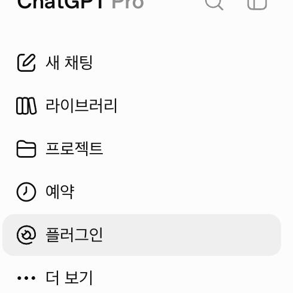
4. 새 플러그인 추가하기
플러그인 스토어 우측 상단의 + 버튼을 누릅니다.
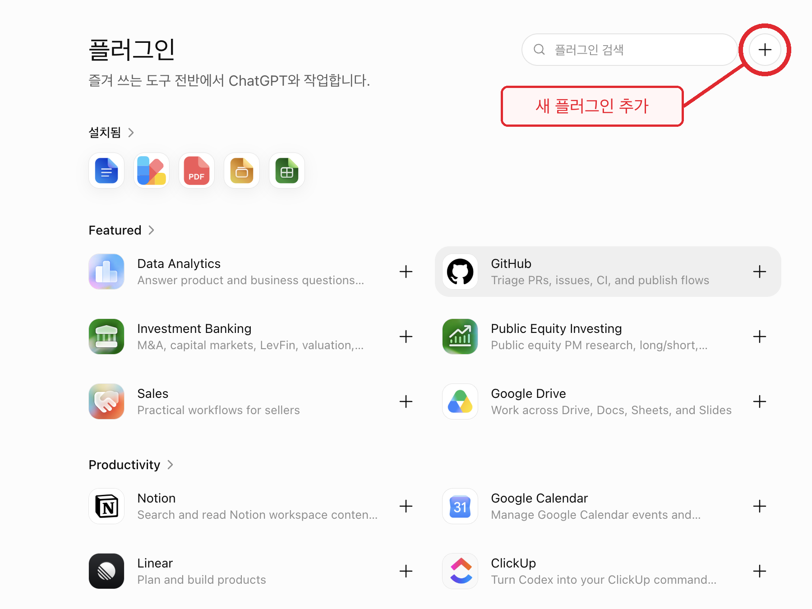
5. 플러그인 정보 입력하기
새 플러그인 화면에서 아래 항목을 순서대로 설정합니다.
| 항목 | 입력값 | 설명 |
|---|---|---|
| 아이콘 | 선택 사항 | 아래에서 내려받은 PNG 파일을 사용할 수 있습니다. |
| 이름 | kdsnr-ai | ChatGPT의 플러그인 목록에 표시되는 이름입니다. |
| 설명 | 선택 사항 | 입력하지 않아도 됩니다. |
| 연결 | 서버 URL | 터널이 아닌 서버 URL을 선택합니다. |
| 인증 | OAuth | 고급 OAuth 설정은 변경하지 않습니다. |
서버 URL 입력란에는 아래 주소를 그대로 붙여 넣습니다. 마지막으로 위험성 안내 아래의 확인란을 선택하고 만들기를 누릅니다.
https://kdsnr-ai-mcp-223982025046.asia-northeast3.run.app/mcp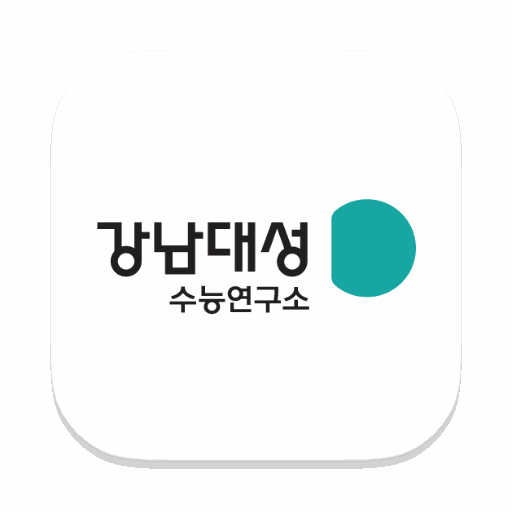
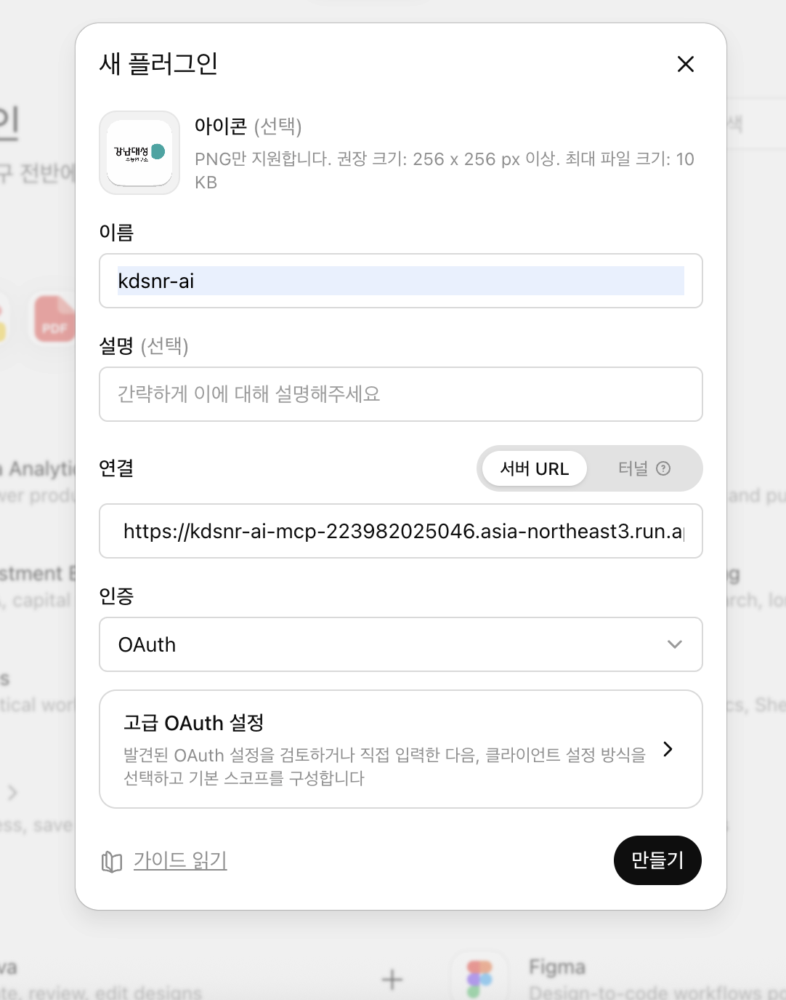
6. Google 계정으로 로그인하기
kdsnr-ai 계정으로 로그인을 누른 뒤 ChatGPT 계정 접근을 허용합니다.
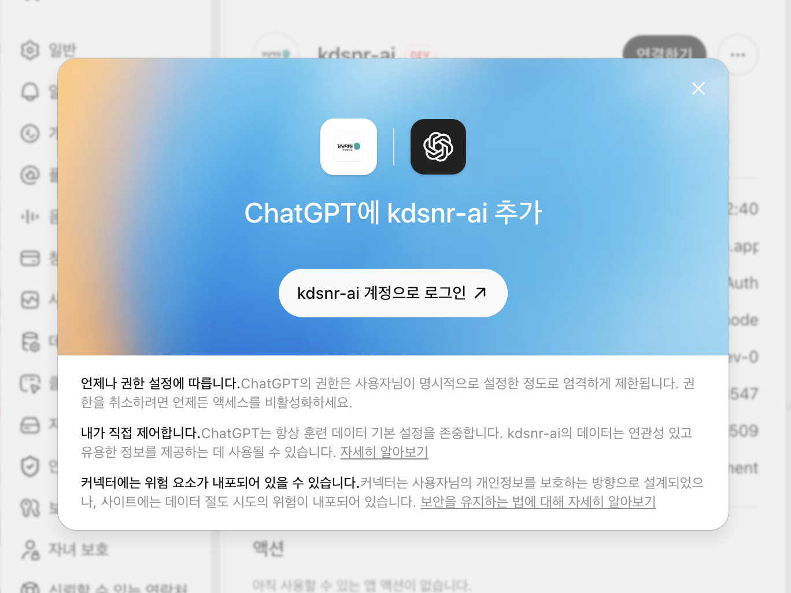
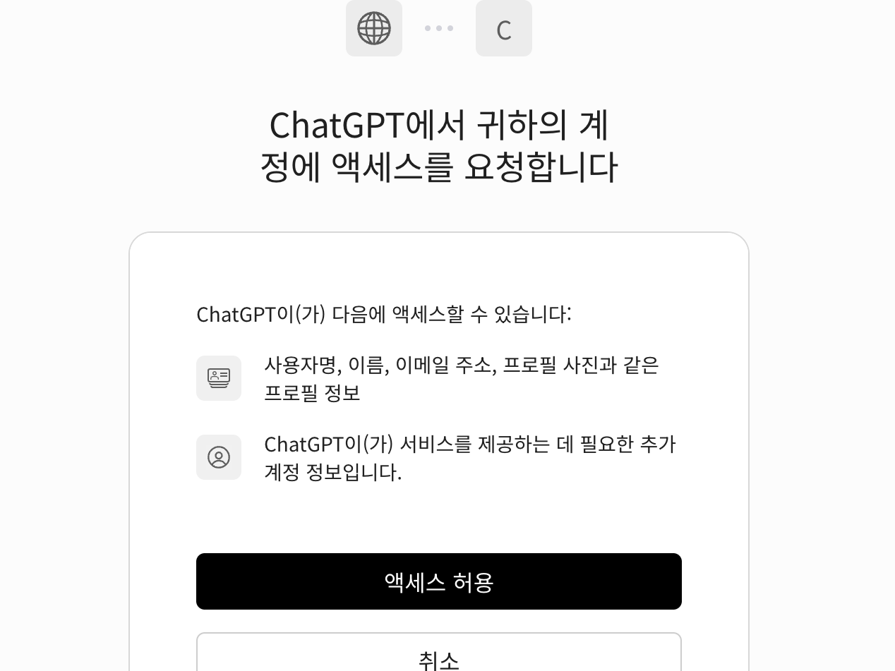
7. 등록 확인하기
플러그인 상세 화면에 연결됨과 로그인한 계정이 표시되면 등록이 완료된 것입니다.
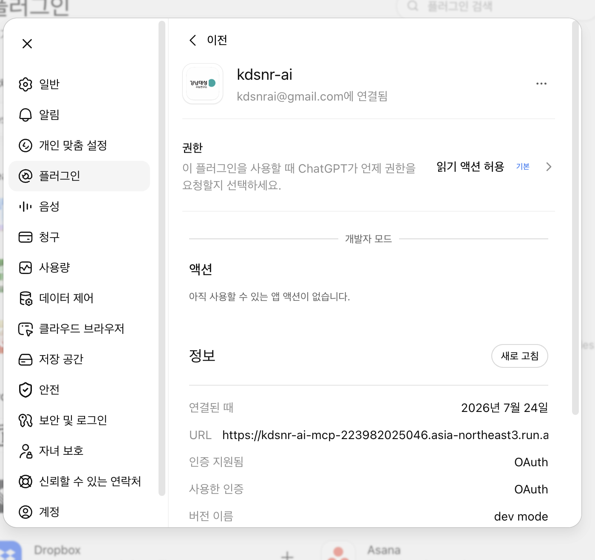
8. 사용하기
대화에 kdsnr-ai 추가
새 대화의 입력창에서 +를 누르고 kdsnr-ai를 선택합니다. 이후 문항 읽기나 HWPX 파일 생성을 평소와 같이 요청합니다.
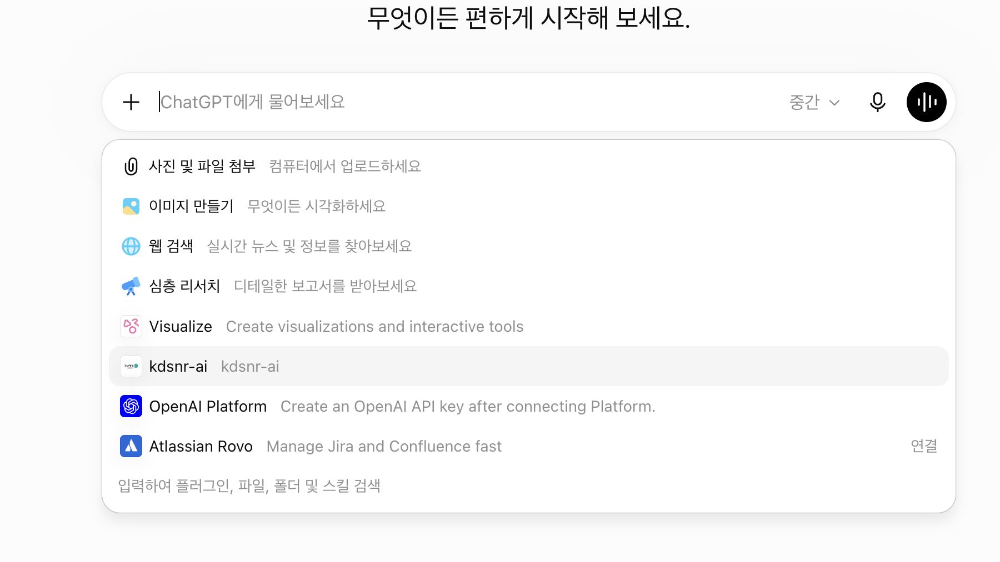
도구 실행 허용
ChatGPT가 kdsnr-ai 기능을 실행하기 전에 확인창을 표시합니다. 한 번만 실행하려면 이번만 허용, 이후 같은 확인을 생략하려면 항상 허용을 선택합니다.
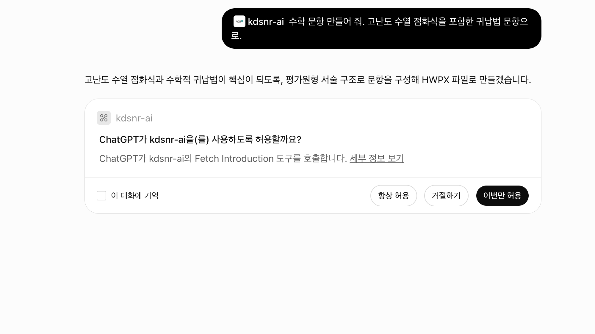
결과 파일 확인
파일 생성이 끝나면 대화창에 HWPX 파일이 표시됩니다. 파일을 내려받아 한글에서 열면 문장과 수식을 편집할 수 있습니다.
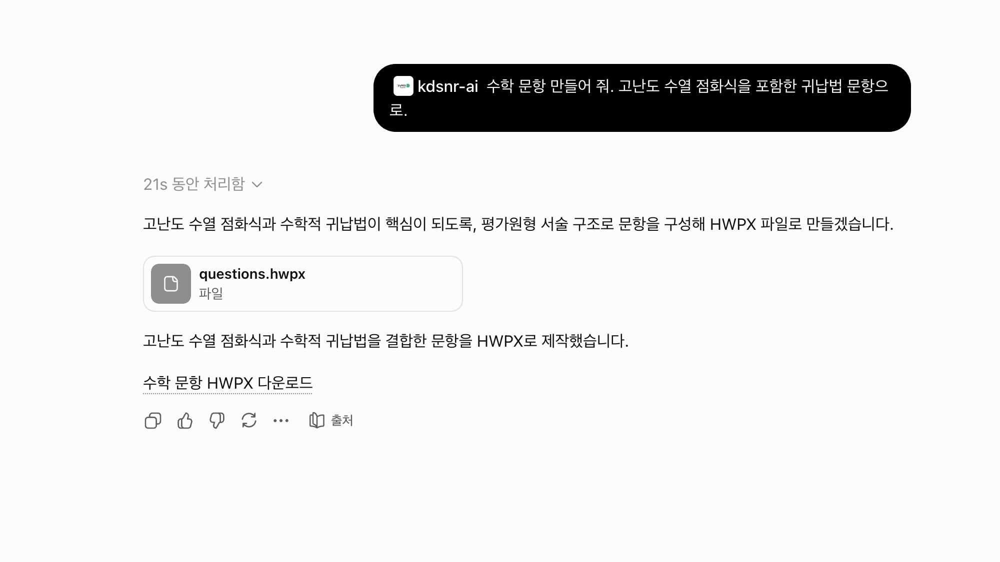
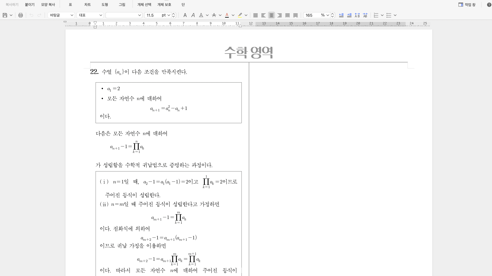
Claude
1. Dashboard에서 사용 승인 받기
좌측 사이드바의 Dashboard를 열고 Google 계정으로 로그인합니다.
- 소속과 인적사항을 입력해 승인 요청을 제출합니다.
- 관리자 승인이 완료될 때까지 기다립니다.
- 승인된 Google 계정을 이후 Claude 연결에도 그대로 사용합니다.
2. 커스텀 커넥터 추가 화면 열기
Claude 좌측 아래의 계정 메뉴에서 설정을 엽니다. 커넥터로 이동한 뒤 우측 상단의 추가 → 커스텀 커넥터 추가를 선택합니다.


{kind=link}
3. 커넥터 정보 입력하기
커스텀 커넥터 추가 화면에서 아래 항목을 입력합니다.
| 항목 | 입력값 | 설명 |
|---|---|---|
| 이름 | kdsnr-ai | Claude의 커넥터 목록에 표시되는 이름입니다. |
| 원격 MCP 서버 URL | 아래 주소 | 주소 끝의 /mcp까지 입력합니다. |
| 고급 설정 | 입력하지 않음 | OAuth 클라이언트 ID와 시크릿은 비워 둡니다. |
원격 MCP 서버 URL 입력란에는 아래 주소를 그대로 붙여 넣고 추가를 누릅니다.
https://kdsnr-ai-mcp-223982025046.asia-northeast3.run.app/mcp
4. Google 계정으로 연결하기
추가된 kdsnr-ai 커넥터에서 연결을 누른 뒤 Claude 계정 접근을 허용합니다.

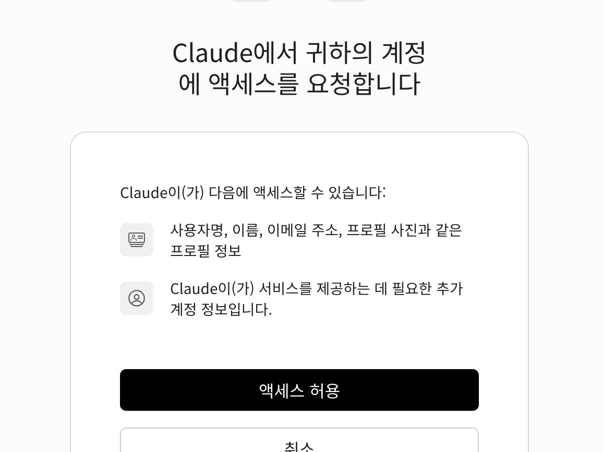
5. 등록 확인하기
커넥터 상세 화면에 연결 해제 버튼과 kdsnr-ai 도구 목록이 표시되면 등록이 완료된 것입니다.
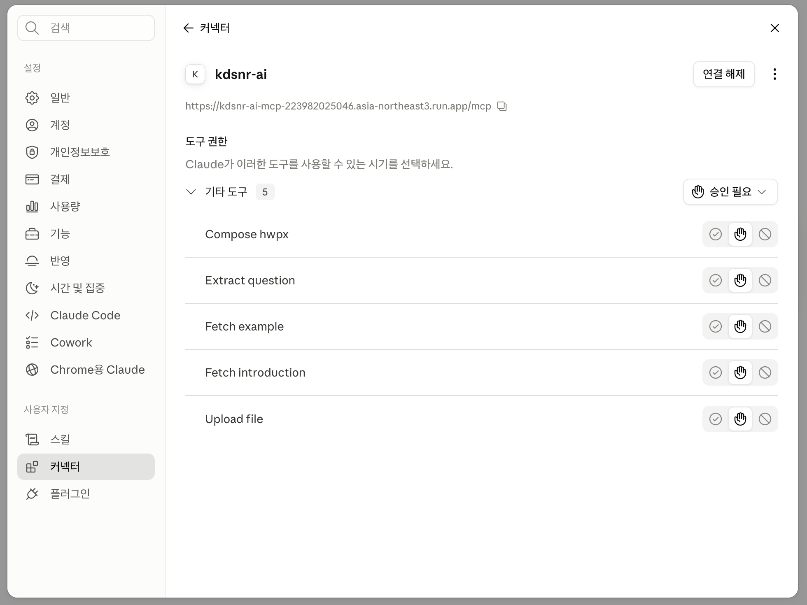
6. 사용하기
대화에 kdsnr-ai 추가
새 대화의 입력창에서 +를 누르고 커넥터에서 kdsnr-ai를 켭니다. 이후 문항 읽기나 HWPX 파일 생성을 평소와 같이 요청합니다.

도구 실행 허용
Claude가 kdsnr-ai 기능을 실행하기 전에 확인창을 표시합니다. 이후 같은 확인을 생략하려면 항상 허용을 선택합니다.

결과 파일 확인
파일 생성이 끝나면 대화창에서 HWPX 파일을 내려받을 수 있습니다. 내려받은 파일은 한글에서 직접 편집할 수 있습니다.
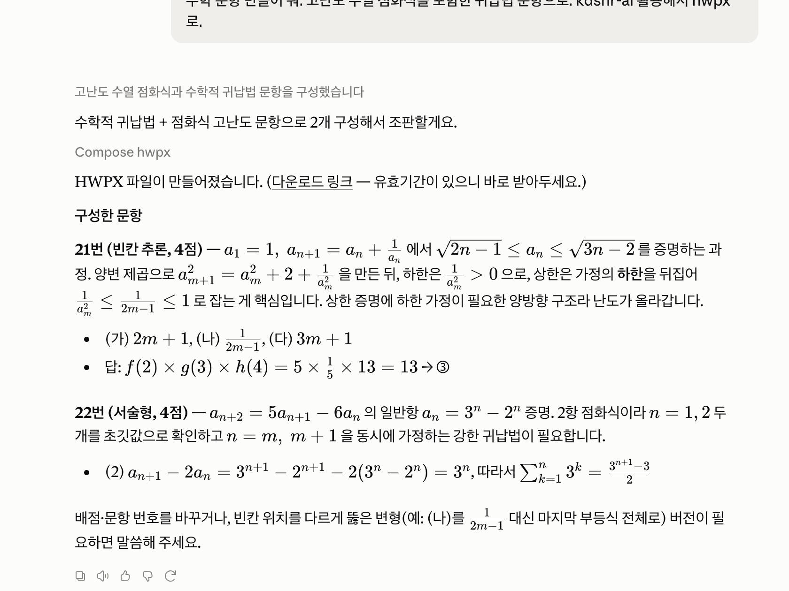
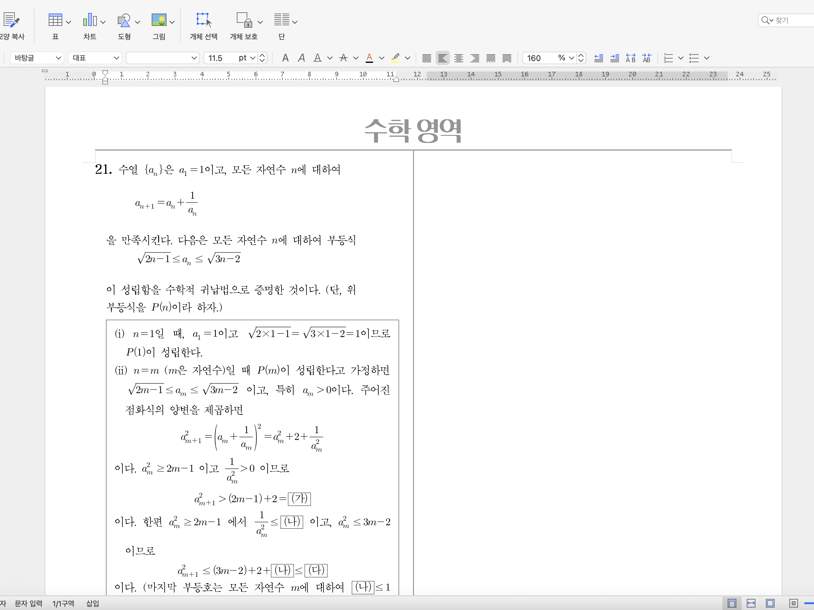
Gemini
1. Dashboard에서 사용 승인 받기
좌측 사이드바의 Dashboard를 열고 Google 계정으로 로그인합니다.
- 소속과 인적사항을 입력해 승인 요청을 제출합니다.
- 관리자 승인이 완료될 때까지 기다립니다.
- 승인된 Google 계정을 이후 Gemini 연결에도 그대로 사용합니다.
2. Spark의 연결된 앱 열기
Gemini 좌측 위의 Spark 탭을 눌러 Spark 모드로 전환합니다. 맞춤설정의 연결된 앱으로 이동한 뒤, 화면 가운데의 맞춤 앱 탭을 선택합니다.
3. 서버 URL 입력하기
Spark용 커스텀 앱의 링크 입력란에 아래 주소를 그대로 붙여 넣고 다음을 누릅니다. 이어지는 맞춤 연결된 앱 설정 창에서도 주소를 확인한 뒤 다음을 누릅니다.
https://kdsnr-ai-mcp-223982025046.asia-northeast3.run.app/mcp| 항목 | 입력값 | 설명 |
|---|---|---|
| 맞춤 앱 링크 | 위 주소 | 주소 끝의 /mcp까지 입력합니다. |
| 고급 설정 | 입력하지 않음 | OAuth 클라이언트 ID와 시크릿은 비워 둡니다. |
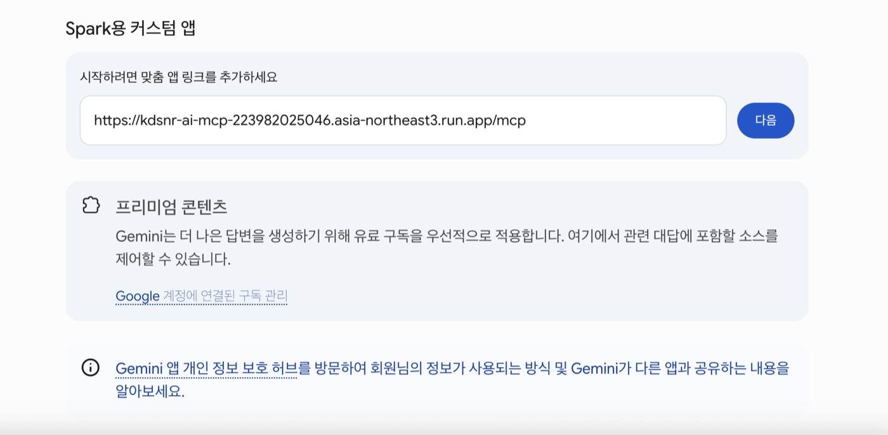
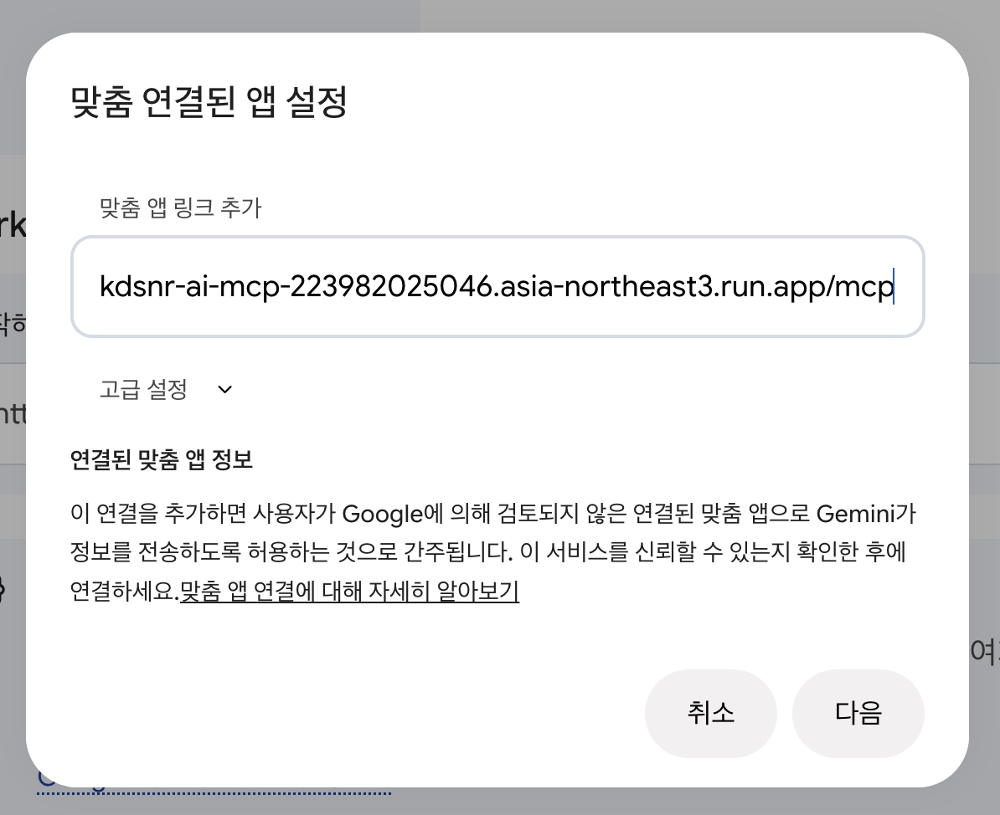
4. Google 계정으로 연결하기
이 MCP 서버 연결 창에서 계정을 확인하고 연결을 누릅니다. 이어서 Google 계정 연결 화면에서 계속, kdsnr-ai 로그인 화면에서 액세스 허용을 차례로 누릅니다.
5. 이름 확인하고 저장하기
맞춤 앱 저장 창에서 이름이 kdsnr-ai인지 확인하고, 사용할 수 있는 작업 목록이 표시되면 연결을 누릅니다.
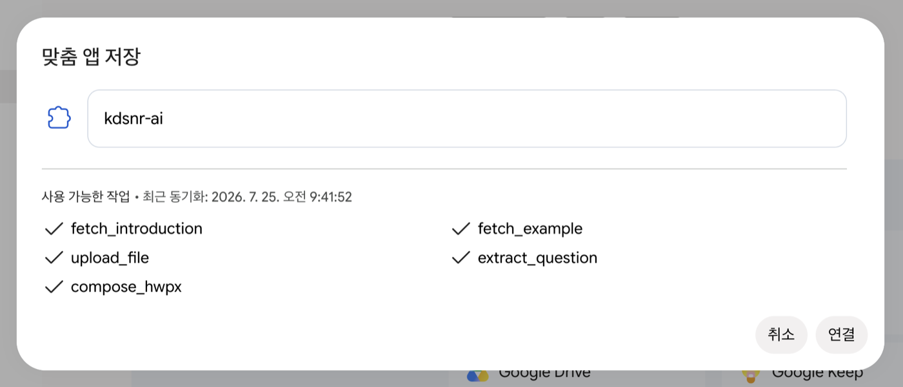
6. 등록 확인하기
Spark용 커스텀 앱 목록에 kdsnr-ai 카드가 켜진 상태로 표시되면 등록이 완료된 것입니다.
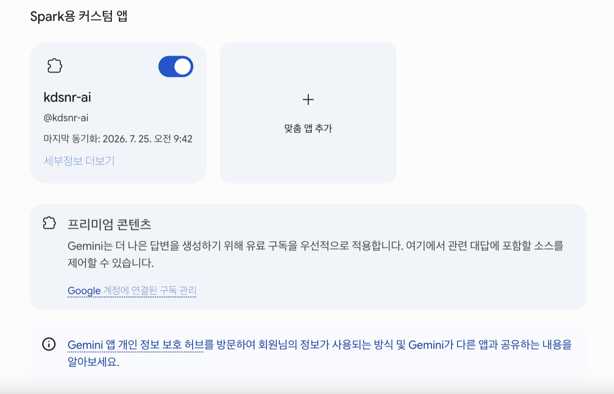
7. 사용하기
작업 요청하기
Spark 모드에서 문항 읽기나 HWPX 파일 생성을 평소와 같이 요청합니다. Gemini가 kdsnr-ai 기능을 실행하기 전에 확인창을 표시하면 Allow를 누릅니다.
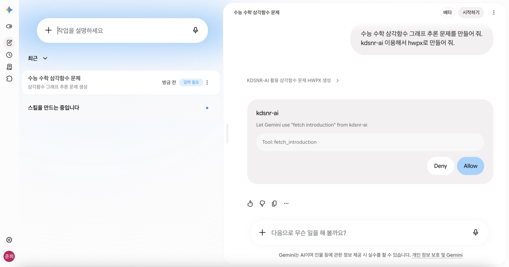
결과 파일 확인
파일 생성이 끝나면 HWPX 다운로드 링크가 표시됩니다. 링크는 1시간 동안 유효하므로 그 안에 파일을 내려받습니다. 내려받은 파일은 한글에서 직접 편집할 수 있습니다.
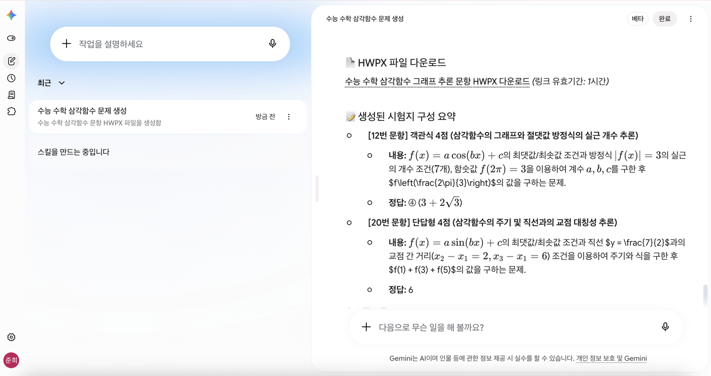
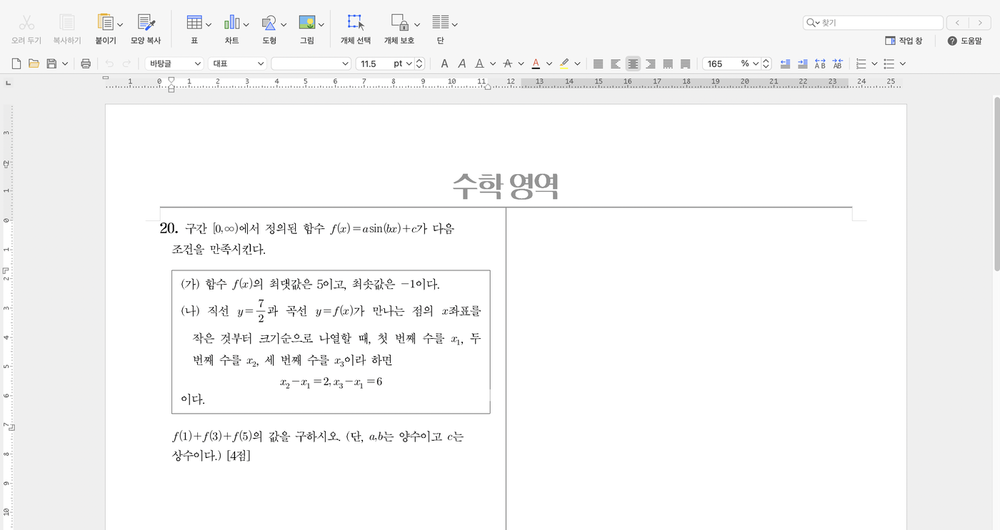